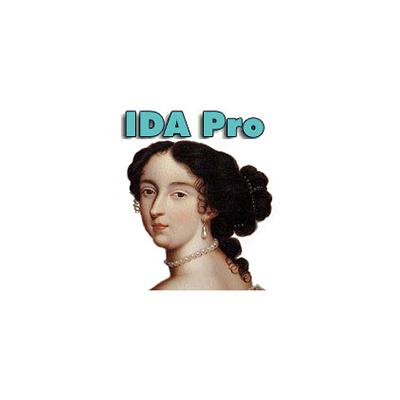
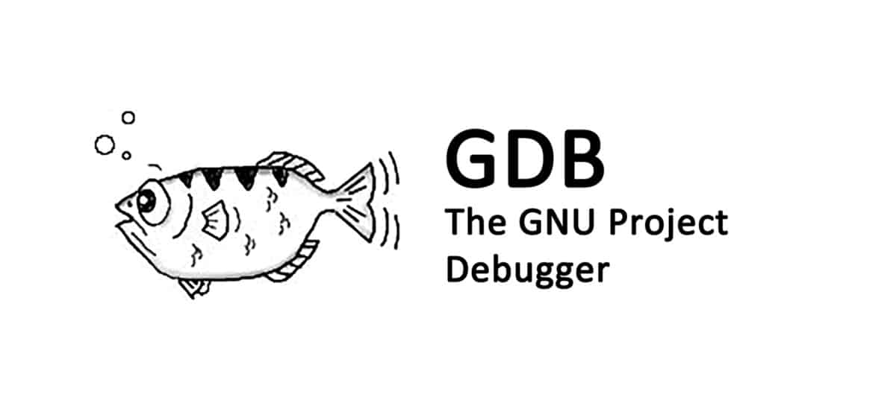
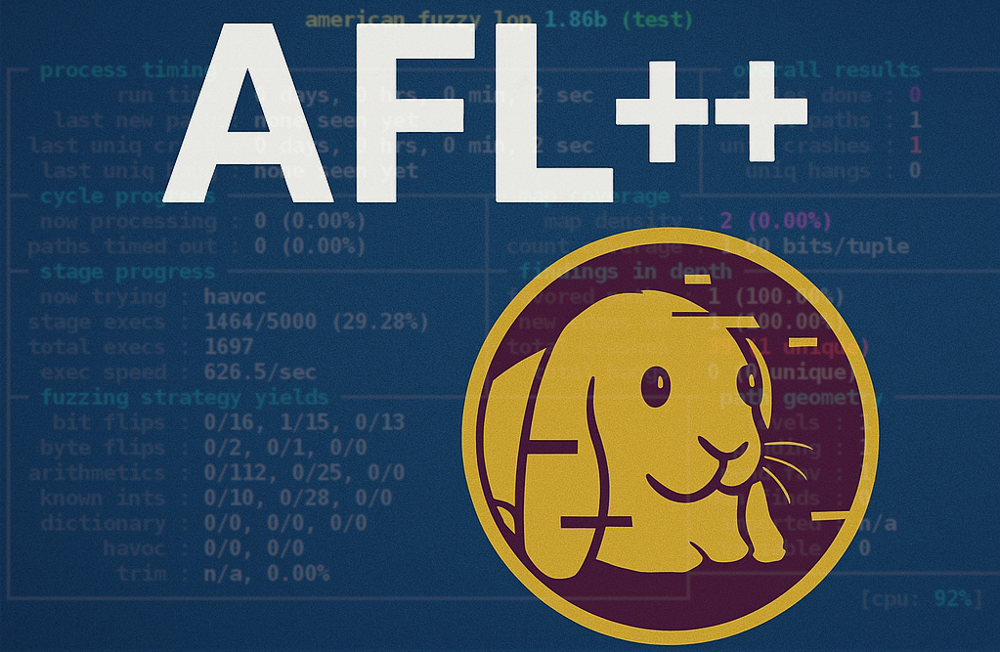
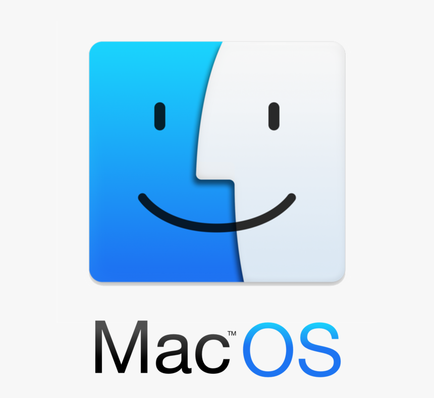
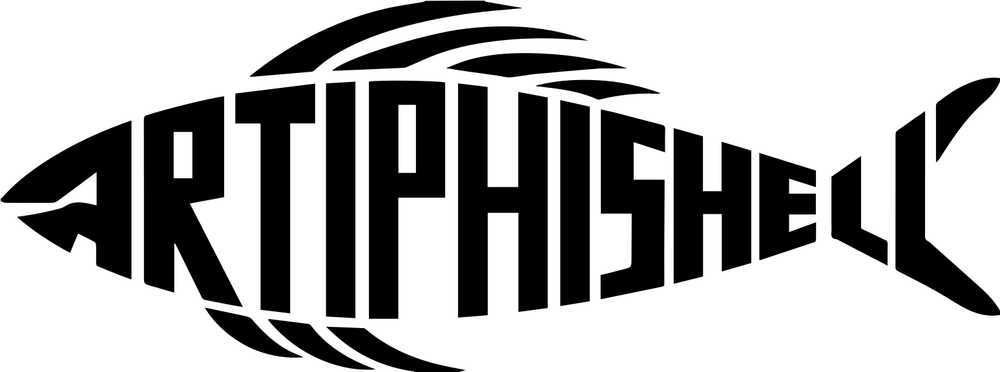

Scaling Autonomous
Software Vulnerability Discovery
Dissertation Prospectus
Wil Gibbs
School of Computing and Augmented Intelligence · Arizona State University
Committee:
Adam Doupé (Co-Chair) ·
Fish Wang (Co-Chair) ·
Yan Shoshitaishvili ·
Adil Ahmad
Arizona State University · SEFCOM
March 2026
Finding Vulnerabilities: Manual Analysis


Finding Vulnerabilities: Dynamic Analysis

Finding Vulnerabilities: Static Analysis
Binaries are Everywhere


The Trajectory Ahead
[1] FIRST Vulnerability Forecast, 2026 [2] IoT Analytics, 2025 [3] Statista Connected Devices, 2025
The Scaling Gap
[1] NVD/CVE.org [2] FIRST Vulnerability Forecast, 2026 [3] ISC2 Workforce Study, 2024 [4] IoT Analytics / Statista, 2025
Scalability Has Two Dimensions
[1] SaTC (USENIX Sec '21) [2] Fang et al., arXiv 2404.08144 [3] Google Project Zero / DeepMind, 'Big Sleep' (2024) [4] OpenSSF, CVE-2024-3094
Case Study: Mirai
Source: Antonakakis et al., 'Understanding the Mirai Botnet,' USENIX Security 2017
Soundness and Completeness
Defining Scalability
Soundness, Completeness, and Scalability
Technique Profiles
Static Analysis
Mostly Sound, but False Positive Heavy
Dynamic Analysis
Verified inputs, but can't find everything
Symbolic Execution
Provable reachability, but not scalable
Ideal Analysis
Where we want to be.
No single tool fills all three axes.
Dissertation Roadmap
The Validation Gap
Operation Mango
Scalable Discovery of Taint-Style Vulnerabilities in Binary Firmware Services
Gibbs et al., USENIX Security '24
Firmware in Embedded Devices
Router
NAS
Camera
Linux-Based Firmware: A Web of Interconnected Binaries
The NVRAM IPC
The Path Explosion Problem
Symbolic Execution Does Not Scale
SaTC: Frontend-Guided Binary Selection
MangoDFA: Value Dependency Analysis
void main() { fgets(name, 0x40, stdin); sub_401080(name); } void sub_401080(char *a1) { snprintf(cmd, 0x60, "hostname %s", a1); system(cmd); }
Sink-to-Source Coarse-Grained Analysis
void main() { fgets(name, 0x40, stdin); start_background_task(&thread); NEW log_access(timestamp); NEW sub_401080(name); } void sub_401080(char *name) { validate_name(name); NEW snprintf(cmd, 0x60, "hostname %s", name); system(cmd); }
Analysis Scope: main → sub_401080 only
Assumed Nonimpact
void main() { fgets(name, 0x40, stdin); start_background_task(&thread); log_access(timestamp); sub_401080(name); } void sub_401080(char *name) { validate_name(name); snprintf(cmd, 0x60, "hostname %s", name); system(cmd); }
start_background_task(&thread)
log_access(timestamp)
sub_401080(name)
validate_name(name)
Ablation Study
Mango: Alert Ablation
Evaluation: Karonte Dataset
Mango: Summary
Artiphishell
DARPA AI Cyber Challenge's Cyber Reasoning System for team Shellphish

The AI Cyber Challenge
28
Repositories
53
Challenge Projects
63
Injected Vulns
42
Initial Competitors
7
Finalist CRS Teams
143
Hours Autonomous
$29.5M
DARPA Investment
Zero
Human Intervention
Scaling Fuzzing Alone Isn't Enough
Source: Zhang et al., 'SoK: DARPA's AI Cyber Challenge,' arXiv:2602.07666, 2025
Artiphishell Architecture
The Analysis Graph
Target Preparation
Static Analysis Pipeline
LLM Seed Generation
Coverage-Guided Fuzzing
Grammar-Based Fuzzing
AIJON
Dynamic Analysis Summary
Root Cause Analysis: DyVA
Patch Generation & Verification
Artiphishell Summary
The Remaining Gap
Chapter 3
PEACH
Automated Validation Through Directed Symbolic Execution
Why Conventional Symbolic Execution Fails
Three Key Design Choices
System Architecture
Preliminary Results
Timeline & Conclusion
PhD Timeline
Thesis Contributions
Thank You
Questions?
Committee: Adam Doupé, Fish Wang, Yan Shoshitaishvili, Adil Ahmad
Arizona State University · SEFCOM
wfgibbs@asu.edu